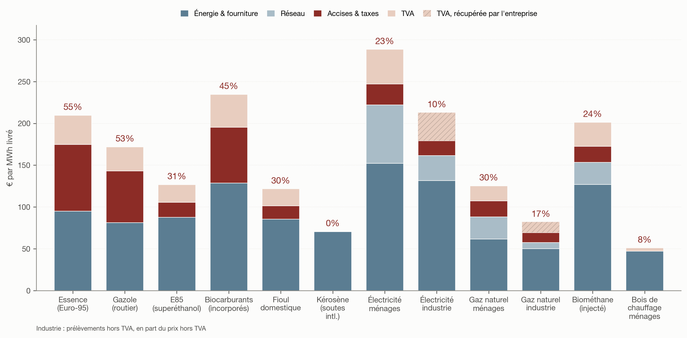
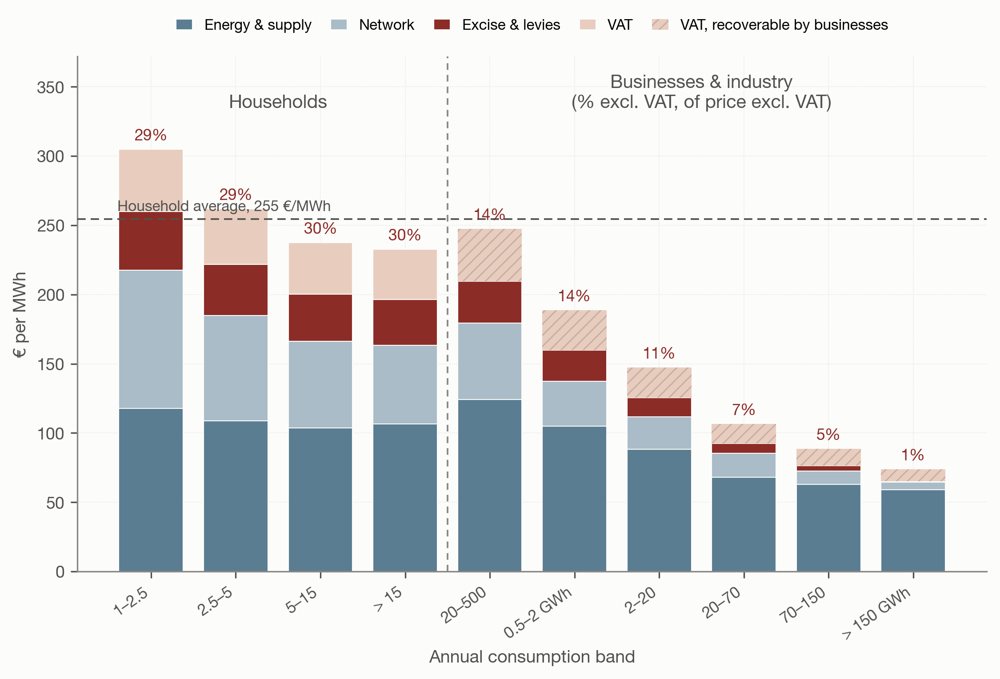
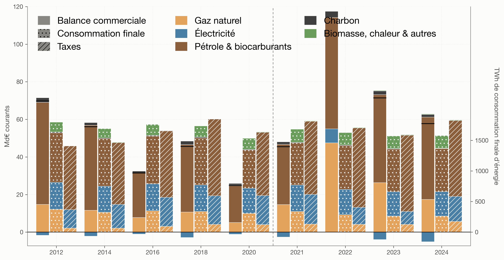

Les taxes sur l'énergie : ce que l'État prend, sur quoi, et à qui
Ce que rapportent les taxes sur l'énergie en France et ailleurs, sur quels produits et payées par qui, avec dix figures refaites à partir des données publiques. La note dit aussi quels chiffres répandus sont faux ou mal posés.
Cette note est le compagnon du thème
Economie/Energy_Taxes : dix figures (output/),
quatre scripts de préparation qui impriment leurs contrôles à chaque
exécution, vingt-trois pièges documentés
(notes/00_pieges_de_construction.md) et une bibliographie
locale (bibliographie/README_france.md,
README_international.md). Elle dit ce qui est établi, avec
quelles sources, et ce qui ne l’est pas — y compris les chiffres
répandus qui se révèlent faux ou mal posés. Les nombres cités sont ceux
des CSV de data/processed/, recalculés le 27 septembre
2026.
1. En cinq phrases
- En France en 2025, les prélèvements font 57 % du prix de l’essence, 54 % du gazole, 30 % des factures d’électricité et de gaz d’un ménage, et 7,5 % du bois de chauffage : d’un vecteur à l’autre, ce n’est pas le coût de l’énergie qui varie autant, c’est l’impôt.
- Pour l’électricité, les accises hors TVA passent de 37 €/MWh pour un ménage à 0,7 €/MWh pour un site de plus de 150 GWh par an — un facteur 50, le plancher étant le minimum de la directive européenne.
- « Les taxes sur l’énergie rapportent X Md€ » a quatre réponses justes pour 2024 : 20, 44, 52 ou 60 Md€. C’est la phrase prononcée qui choisit le nombre.
- Les prélèvements (59,7 Md€) et la facture énergétique extérieure (57,8 Md€) sont du même ordre en 2024, mais l’un est assis sur des volumes et l’autre sur des prix : leur rapport va de 0,47 à 2,15 selon l’année, et il n’y a pas de ratio à citer.
- Les substituts bas-carbone — biocarburants, biométhane injecté — sont plus taxés au MWh que les fossiles qu’ils remplacent, tandis que le kérosène des vols internationaux et le fioul des navires sont à zéro.
2. Ce que paie un client, vecteur par vecteur

La figure est celle de 2024, dernière année où la dépense en kérosène et le prix du biométhane sont publiés ; le tableau qui suit est celui de 2025.
France 2025, part des prélèvements (accises et TVA) dans la facture TTC, sauf pour les deux colonnes « ind. », où l’acheteur récupère la TVA. Eurostat pour l’électricité et le gaz (année entière), Weekly Oil Bulletin pour les carburants (moyenne des 52 semaines), bilan SDES pour le bois :
| Essence | Gazole | Fioul | Élec. mén. | Gaz mén. | Bois mén. | Élec. ind. | Gaz ind. | |
|---|---|---|---|---|---|---|---|---|
| Part des taxes | 57 % | 54 % | 30 % | 29,5 % | 30 % | 7,5 % | 14 % ¹ | 17 % ¹ |
| Facture TTC (€/MWh) | 199 | 164 | 115 | 262 | 136 | 52 | 189 (160 HT) | 78 (66 HT) |
| … dans l’unité d’usage | 1,73 €/L | 1,62 €/L | 1,13 €/L | 0,26 €/kWh | 0,136 €/kWh | — | 0,19 €/kWh | 0,078 €/kWh |
¹ Tranche de référence Eurostat (0,5–2 GWh pour l’électricité, 10–100 TJ pour le gaz). Prélèvements hors TVA, rapportés au prix hors TVA : 22,5 €/MWh sur 160 pour l’électricité, 11,5 sur 66,5 pour le gaz. TVA comprise, on lirait 27 % et 30 % — mais cette TVA (28,8 et 11,9 €/MWh) est récupérée par l’entreprise ; elle est hachurée sur la figure.
La dernière ligne est là pour être vérifiée de tête : un €/MWh de gazole ne se contrôle pas, un €/L si.
Le réseau n’est pas un prélèvement. Le TURPE est le prix du transport et de la distribution ; il est affiché à part, et la part de taxes de l’électricité des ménages passerait de 29,5 % à 58 % si on l’y rangeait. Seule exception, la CTA : c’est un impôt (elle finance la retraite des industries électriques et gazières), assis sur le tarif de réseau — 1,5 Md€ en 2024.
Le bois est la barre qui fait le contraste. Il n’est pas soumis à l’accise, et c’est écrit (art. L. 312-9 du CIBS). Ses 7,5 % sont de la TVA, et encore : le taux légal est de 10 %, l’écart étant la part qui ne passe par aucune transaction taxée (bois autoconsommé, marché informel). Le taux est déduit du rapport taxes / dépense du SDES, pas posé en hypothèse.
La même molécule, deux tarifs selon le contenant.
L’éthanol incorporé au SP95-E10 supporte l’accise de l’essence,
75,4 €/MWh (L. 312-83) ; vendu en superéthanol E85, il
est à 17,9 €/MWh (L. 312-84). Un facteur 4,2 selon la
pompe (CLM-energy-taxes-ethanol-e85-vs-e10). L’accise
reconstituée à partir des prix DGEC tombe à 17,9 contre 17,894 au tarif
légal, ce qui valide au passage le prix et le coefficient
énergétique.
3. Le gradient selon la taille du client

Électricité, France 2025, en €/MWh :
| Ménage 1–2,5 MWh | Ménage 2,5–5 MWh | Site > 150 GWh | Rapport | |
|---|---|---|---|---|
| Énergie et fourniture | 117,9 | 108,8 | 59,1 | 2,0 |
| Total des prélèvements, TVA comprise | 87,3 | 77,2 | 9,4 | 9,3 |
| dont TVA | 45,0 | 40,1 | 8,7, récupérée | |
| dont accises et taxes, hors TVA | 42,3 | 37,1 | 0,7 | 60 |
| Part des prélèvements | 29 % du TTC | 29,5 % du TTC | 1 % du HT |
Le rapport qui compte est 60 : la TVA du gros site, hachurée sur la figure, ne lui coûte rien. Ses prélèvements font 1,1 % de son prix hors TVA (65,4 €/MWh), et non les 13 % qu’on lit en comptant la TVA.
L’énergie coûte deux fois moins cher au gros industriel ; l’accise,
soixante fois moins. Le plancher de 0,5 €/MWh est le minimum fixé par la
directive 2003/96/CE pour l’électricité à usage professionnel. L’accise
seule — la composante TAX_ENV d’Eurostat — est de 30,4
€/MWh pour le ménage de référence
(CLM-energy-taxes-accise-elec-30-4-vs-0-5).
Le prix moyen de l’électricité des ménages, toutes tranches confondues, est de 255 €/MWh en 2025. La tranche « moins de 1 MWh/an » ressort à 473 €/MWh parce que l’abonnement y est étalé sur presque rien : elle est écartée par défaut de la figure (piège 10).
4. Combien pour la puissance publique : quatre nombres justes
| France 2024 | Md€ | Périmètre | Source |
|---|---|---|---|
| Taxes sur l’énergie, TVA comprise, brutes | 59,7 | toutes administrations | SDES, somme par vecteur |
| … nettes des subventions à l’énergie | 52,5 | idem | SDES SY079MFR |
| Taxes sur l’énergie, hors TVA | 43,6 | toutes administrations | Eurostat env_ac_tax, NRG |
| … dont accises, part État nette | 20,2 | budget général seul | Voies et moyens t. I, PLF 2026 |
L’écart de 59,7 à 43,6 est la TVA, qu’Eurostat
exclut par convention (déductible, non ciblée) : de 10,7 à 16,1 Md€
selon l’année. L’écart de 43,6 à 20,2 est le transfert
aux régions, aux départements et à l’AFITF : la moitié de l’ex-TICPE
n’atteint jamais le budget général. Entre les deux, le budget vert du
PLF 2026 chiffre l’accise seule, toutes affectations, à
37,8 Md€ (CLM-energy-taxes-budget-vert-accise-37-8).
La règle. « Ce que l’État encaisse » : 20 Md€. « Ce que la puissance publique prélève sur l’énergie » : 44 Md€ hors TVA, 60 avec. Ne jamais donner le nombre sans dire lequel.
En part : 1,49 % du PIB et 3,3 % des prélèvements obligatoires (Eurostat, hors TVA), comme l’Allemagne (1,48 % du PIB, 64,2 Md€). Les ménages en acquittent 59,6 % en France, 47,4 % en Allemagne — calculé sur le compte ventilé par payeur (40,9 Md€), qui n’est pas le même que le total agrégé (piège 6).
5. Face à la facture énergétique, et vecteur par vecteur

La facture énergétique extérieure — somme des soldes importations − exportations par produit — fait 57,8 Md€ en 2024 : du même ordre que les 59,7 Md€ de prélèvements. Mais la facture suit les prix (25 Md€ en 2020, 118 Md€ en 2022, un facteur 4,7) quand les taxes suivent les volumes (±10 % en dix ans).
Et l’égalité des totaux cache trois situations opposées :
| France 2024, Md€ | Balance commerciale | Taxes | Volume (TWh) | Taux implicite (€/MWh) |
|---|---|---|---|---|
| Pétrole (soutes comprises) | 41,0 | 36,4 | 666 | 54,7 |
| Biocarburants | 2,8 | 4,0 | 38 | 105,4 |
| Gaz naturel | 17,4 | 5,6 | 263 | 21,3 |
| Électricité | −5,2 | 13,4 | 398 | 33,6 |
| Biomasse, chaleur, autres | 0,3 | 0,2 | 208 | 1,2 |
| Charbon | 1,4 | 0,0 | 5 | 1,3 |
| Total | 57,8 | 59,7 |
- Le pétrole : on importe autant qu’on taxe.
- Le gaz : on paie beaucoup, on taxe peu. Le facteur 2,6 de taux implicite entre pétrole et gaz, combiné à 2,5 de volume, fait le facteur 6,5 des recettes — moitié volume, moitié taux.
- L’électricité : le seul vecteur qui rapporte des devises est celui dont la fiscalité est la plus lourde rapportée à sa position commerciale. Il n’a été en déficit qu’en 2022, l’année des arrêts pour corrosion sous contrainte.
Les soutes internationales, 80,2 TWh en 2024
(kérosène des vols internationaux et fioul des navires : 79,6 TWh de
produits raffinés et 0,7 de biokérosène, total publié
SY032TFR), sont dans la balance commerciale (~4,9 Md€) et,
par choix de périmètre, dans le volume du pétrole — mais taxées
à zéro (art. L. 312-58 et L. 312-55 du CIBS). Le taux implicite
du pétrole seul vaut 54,7 €/MWh en les comptant, 62,1 sans elles ;
pétrole et biocarburants réunis, 57,4 et 64,8. C’est le plus gros trou
de l’assiette fiscale française de l’énergie.
Les substituts bas-carbone paient plus au MWh. Même accise que le fossile — c’est le même litre, le même tuyau — mais une TVA assise sur un coût de production bien supérieur :
| France 2024 | €/MWh TTC | part de taxes | taxes en €/MWh |
|---|---|---|---|
| Gaz fossile ménages | 125,3 | 29,6 % | 37,1 |
| Biométhane injecté | 201,4 | 23,8 % | 48,0 |
| Gazole routier | 171,9 | 52,6 % | 90,5 |
| Biocarburants | 234,7 | 45,1 % | 105,8 |
Lire la seule colonne « part de taxes » ferait dire que les substituts sont moins taxés : c’est l’inverse. Le biométhane injecté a en outre perdu son régime réduit en 2024 (article 92 de la LF 2024), l’année où le tarif normal du gaz passait de 8,37 à 16,37 €/MWh.
6. 2022-2025 : le bouclier, puis sa sortie
En 2022, la facture double pendant que les prélèvements
baissent — remise à la pompe, bouclier tarifaire,
accise sur l’électricité ramenée à son plancher européen. Sur
l’électricité, les taxes brutes passent de 15,8 Md€ (2021) à 8,9 (2022)
et 6,8 (2023), puis remontent à 13,4 en 2024 : un taux implicite de 36,6
→ 21,6 → 17,2 → 33,6 €/MWh
(CLM-energy-taxes-taxes-brutes-electricite-2021-2024).
C’est une décision, pas un mécanisme. Les prix de
gros s’effondrent en 2023 et les taxes baissent encore cette année-là :
une baisse qui ne suit pas le marché est discrétionnaire
(ADR-005). Ces séries se montrent en brut, TVA
comprise, et la mention figure sur l’image
(ADR-004) : le bouclier ne se lit pas dans l’écart brut/net
du SDES, il se chiffre avec la Cour des comptes.
La contrepartie arrive en 2025 : la part État nette de l’accise sur l’électricité (ex-TICFE, ligne 1503 des Voies et moyens) passe de 1,5 Md€ à 5,6 Md€, sans qu’aucun taux nouveau ait été créé. Et la hausse d’août 2025 (25,09 → 29,98 €/MWh pour les ménages) est pour partie un reclassement : la nouvelle brique ZNI de l’accise finance la péréquation outre-mer et le CAS Facé, que payait jusque-là le TURPE (piège 7).
7. Les chiffres répandus qui se révèlent faux, ou mal posés
- « L’État encaisse 44 Md€ de taxes sur l’énergie. » Faux : la puissance publique prélève 44 Md€ hors TVA ; l’État, budget général, en garde 20.
- « Les taxes représentent X % de la facture énergétique du pays. » Ce ratio n’existe pas : 0,47 en 2022, 2,15 en 2020. Montrer les deux séries, jamais leur quotient.
- « Les biocarburants sont moins taxés que le gazole. » En part oui (45 % contre 53 %), en €/MWh non (105,8 contre 90,5) : la part baisse parce que le produit est plus cher.
- « L’accise électricité a augmenté de 19 % en août 2025. » En partie un poste qui change de case, du réseau vers l’accise.
- « L’accise sur les carburants est le prix de la route.
» Le tarif suit le contenant et non l’usage (le même éthanol à
75,4 ou 17,9 €/MWh), il ignore le lieu, l’heure et la congestion, et son
assiette s’effondre avec l’électrification (
ADR-006). - Additionner
TAX_FEE_LEV_CHRGetVATchez Eurostat. Le premier est déjà le total TVA comprise : l’empiler avec la TVA la compte deux fois (piège 1). - Taxes sur l’énergie et taxes sur les transports. La
TICPE est une taxe sur l’énergie (
NRG) ; les taxes sur les véhicules (TRA, 7,5 Md€) sont autre chose. Les confondre fausse le total d’un facteur 6. - Remonter avant 2019 sur Eurostat. L’Allemagne n’a pas déclaré sa composante fiscale en 2017 et 2018 sans que rien ne le signale, et l’agrégat UE-27 en est contaminé.
8. Ce qui n’est pas établi
- Le résidu du SDES en 2023. La somme des taxes par
vecteur moins
SY079MFRdevrait valoir les subventions à l’énergie ; elle devient négative en 2023 (−1,3 Md€), ce qu’aucune subvention n’explique. Ne pas commenter 2023 sur la série nette. - La taxe sur les biocarburants est reconstituée, pas publiée : c’est la seule grandeur du dossier dans ce cas (piège 21). La figure par défaut fusionne donc biocarburants et pétrole.
- Les reversements des contrats EnR en 2022-2023 au
budget de l’État (compléments de rémunération négatifs) ne sont pas
chiffrés ici ; ils pourraient changer la lecture du fléchage
(
QUE-energy-taxes-reversements-cspe-2022-2023). - La comparaison internationale (Royaume-Uni,
États-Unis, Inde, Chine) en brut et net de subventions, à partir de la
base OCDE, n’est pas faite. Seul le taux britannique est vérifié : 52,95
p/L, et non 57,95
(
CLM-energy-taxes-uk-fuel-duty-52-95). - La régressivité n’est pas recalculée ici : on reprend le budget vert du PLF 2026, qui chiffre l’accise à 580 € par ménage et par an, soit 2,1 % du revenu du premier cinquième contre 0,7 % du dernier.
9. Reproduire
Depuis le dossier du thème : prepare_eurostat.py,
prepare_carburants.py, prepare_recettes.py,
prepare_bilan_sdes.py, puis les quatre scripts
plot_*.py. Les options et la liste des figures sont dans le
README.md. Trois scripts écrivent un fichier de résidus
(controle_*.csv) : ce sont les points où la source ne se
recoupe pas avec elle-même, conservés plutôt que lissés.
10. Sources
- Eurostat — composantes du prix de l’électricité et
du gaz,
nrg_pc_204_c(ménages) etnrg_pc_205_c(non-ménages), 2019-2025 ; recettesenv_ac_tax(1995-2024) etenv_ac_taxind2(par payeur). - Commission européenne, Weekly Oil Bulletin — prix des carburants avec et sans taxes, barèmes d’accise et de TVA.
- SDES, bilan énergétique de la France — facture
énergétique et taxes par vecteur, TVA comprise ; séries
SY079MFR,SY081MFR,EN322€MR,EN171MFR,EN177MFR, soutesPE009TFR,PE010TFR,N115MFR. - PLF 2026 — Voies et moyens, tome I (part État des accises) ; rapport sur l’impact environnemental du budget, partie II p. 243-250.
- DGEC/DLF, Guide de la fiscalité des énergies 2026 — § I.1.d p. 12 (brique ZNI), § V.b (bois), annexe 3 p. 37 (tous vecteurs en €/MWh).
- Code des impositions sur les biens et services — art. L. 312-9, 312-35, 312-37-1, 312-55, 312-58, 312-83, 312-84, 312-86.
- OBR, Fuel duties — taux et recettes britanniques.
Le détail de chaque fichier, avec l’URL et les pages utilisées, est
dans bibliographie/README_france.md et
README_international.md.
Télécharger la version PDF (les liens y restent actifs).
Notes voisines
- Financer la transition : qui paie, à quel taux, pourquoi (note, 29/09/2026) + classeur LCOE vs coût du capital
- Investir dans la transition énergétique : combien, où, et combien il en faudrait
- La chaleur industrielle : combien, à quelle température, et ce que l'électricité peut en faire
- Stocker la chaleur dans l'industrie : techniques, coûts, maturité